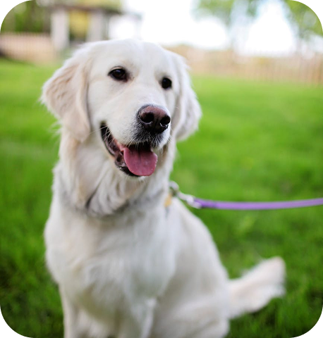

Perguntas Frequentes
O que é FIV?

A FIV é um vírus que ataca a defesa do corpo dos gatos, deixando-os mais doentes. Transmitido por mordidas, causa febre, perda de peso e infecções. Não tem cura, mas com cuidados como boa alimentação e visitas ao vet, o gato pode viver bem. Evitar brigas e castrar ajudam a prevenir.
O que é FELV

A FeLV é um vírus que enfraquece a defesa dos gatos, podendo causar doenças graves como câncer e anemia. Transmitido por contato próximo, como lambidas. Sintomas: fraqueza, febre, perda de peso. Não tem cura, mas os cuidados com boa alimentação e visitas ao vet ajudam. Vacinas e evitar gatos infectados ajudam na prevenção.
Cuidados Pós-Resgate
Após o resgate, o animal precisa de cuidados médicos, como vacinação e vermifugação, além de exames veterinários. Uma alimentação balanceada e ambiente seguro são essenciais. Gradualmente, com paciência e carinho, o animal se adapta ao novo lar.